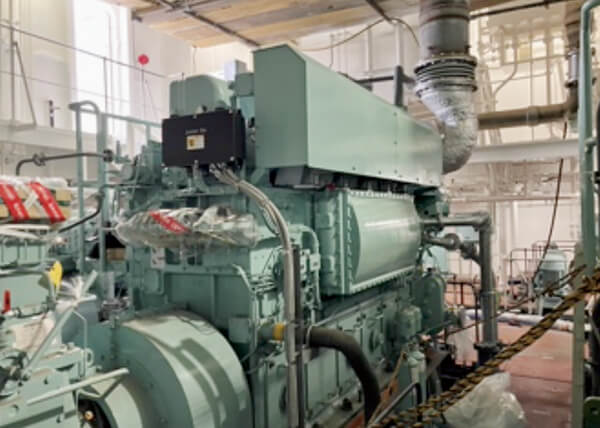
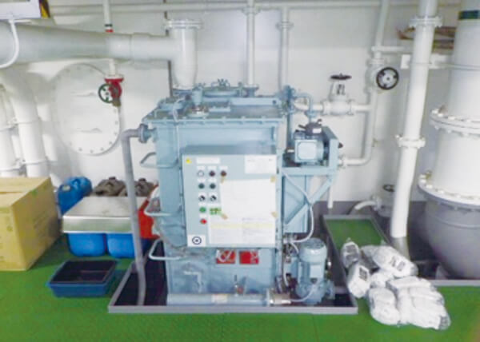
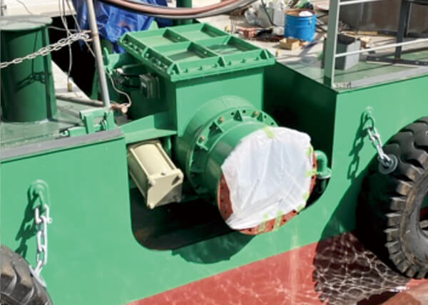
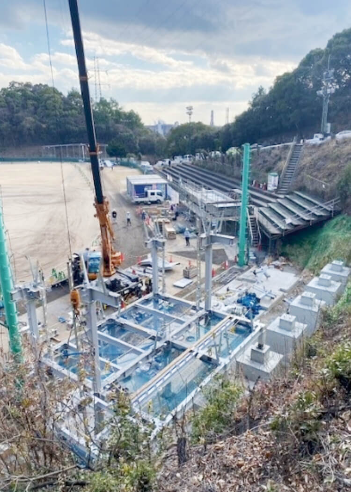

特集
2
サステナビリティ・トピックス
Sustainability Topics
環境問題に対応した作業船
「八洲丸（やしままる）」 の環境成績表を公開

当社は2024年1月、サステナブルな視点から設計し2023年度に竣工したバージアンローダ船「八洲丸」の環境成績表を公開しました。この作業船は政府が策定した2030年度のCO2排出削減目標の達成、および2050年カーボンニュートラル達成を念頭に置いた「環境負荷対策船」で、さまざまな面で環境課題に対応しています。
| 大項目 | 項目 | 内容 | 2023年度 成績 |
|---|---|---|---|
| 機関 | 機関稼働時間（主機関） | IMO（国際海事機関）NOx二次規制に対応（燃料消費率低減とNOx排出量低下の両立）） ［写真1］ |
558時間 |
| 機関稼働時間（主発機関） | 778時間 | ||
| 機関稼働時間（補発機関） | 3,150時間 | ||
| バイオ燃料使用量 | バイオ燃料の使用が可能 | 0ℓ | |
| ウインチ稼働時間 | ウインチは電動式を採用し、専用の機関を必要としない（バージの隻数×離接舷時間10分） ［写真2］ |
30時間 | |
| 電力 | 陸上電力使用量 | 停泊時は、搭載する陸上電力供給設備から船内電力を確保することで、発電機からの電力が不要 | 0kw |
| 海洋汚染 防止 |
生分解性オイル使用量 | 各駆動部の作動油に、生分解性オイルを使用 | 2,898ℓ |
| 汚水処理量 | 船内生活で排出される排水等を、汚水処理装置を使用し適切に処理 ［写真3］ |
-（機器調整中） | |
| 逆止弁使用回数 | 施工中に排管を通じて泥水が逆流して海洋へ流出することを防ぐために、排管に逆止弁を設置（バージの隻数） ［写真4］ |
181回 | |
| オイルフェンス使用回数 | 海面への油流出対策として、オイルフェンス巻取機を設置 油・燃料の流出に備えて、迅速にオイルフェンス展張が可能自船だけでなく、他船の流出でも使用可能 |
0回 |

写真1 主機関

写真2 ウインチ

写真3 汚水処理装置

写真4 逆止弁
脱炭素・気候変動対策への取り組み
当社は、気候変動対策への取組みをより推進するため、JFEスチール株式会社発注の「旭ヶ丘野球場本部席建替え工事」において、グリーン鋼材「JGreeX」を使用し建設を行いました。これによりスコープ3カテゴリー1のCO2排出量を従来に比べ て33.5t削減しました。
当社は、2050年カーボンニュートラルの実現に取り組み、2030年及び2050年をマイルストーンとする豊かな未来と確か な価値を創造します。
※「JGreeX」はJFEスチール株式会社の登録商標です。
当社は、2050年カーボンニュートラルの実現に取り組み、2030年及び2050年をマイルストーンとする豊かな未来と確か な価値を創造します。
※「JGreeX」はJFEスチール株式会社の登録商標です。
